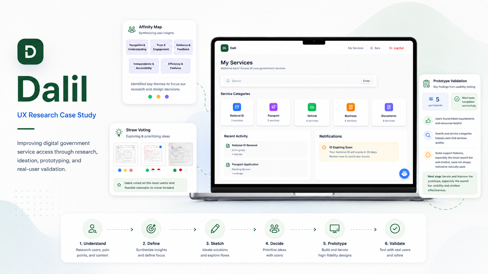
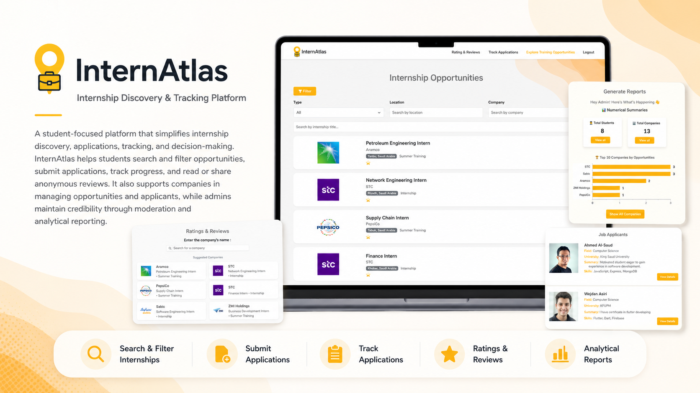
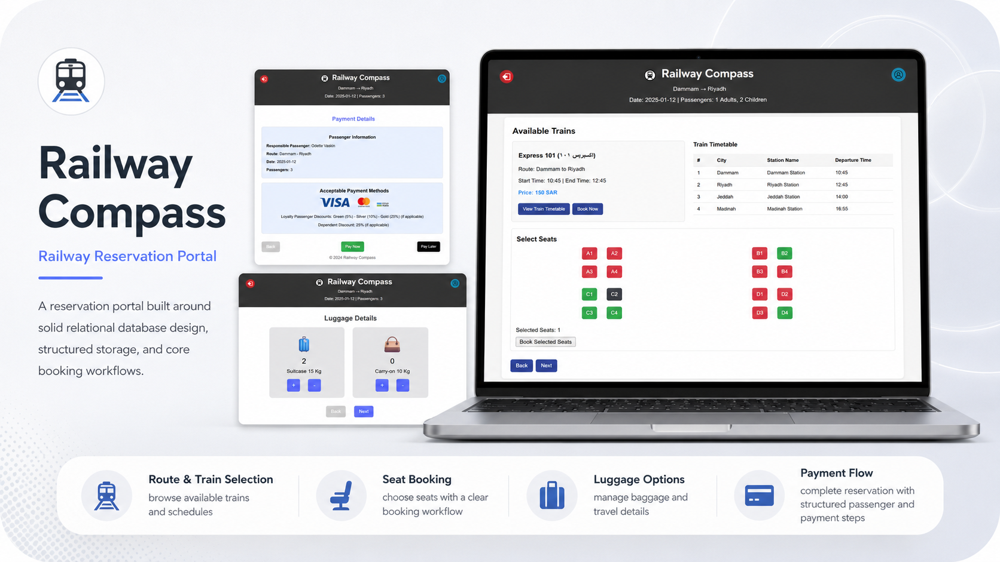
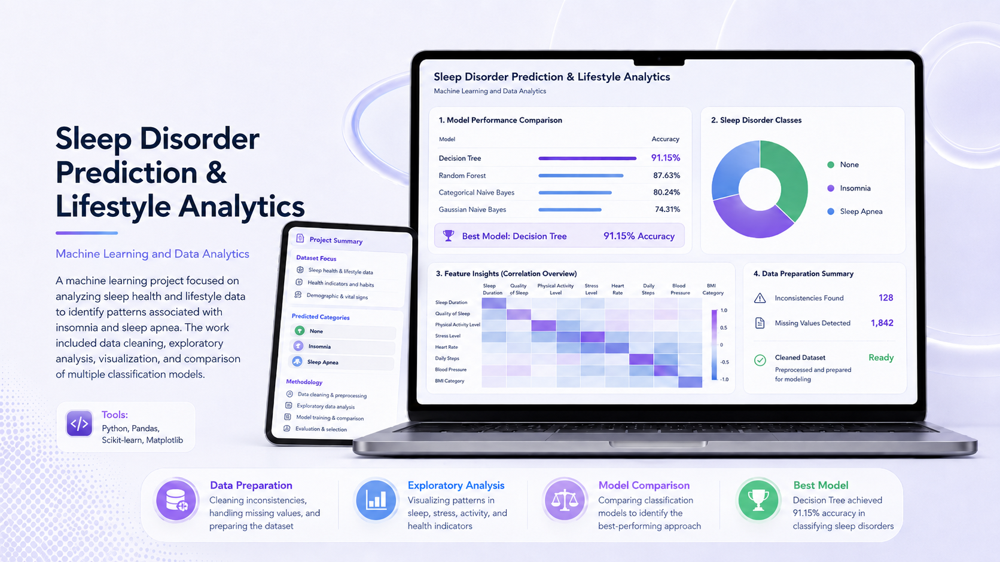

Hi, I'm Rawan Asiri
Computer Science Graduate from KFUPM | Full-Stack Developer | Data & UX Enthusiast
Computer Science graduate with honors from KFUPM, experienced in full-stack development, data-driven solutions, and digital product development. I build web and mobile applications, backend systems, and practical software solutions that translate complex requirements into clear and usable products.
Computer Science
Structured solutions for real requirements
Data Management
Turning ideas and information into useful digital solutions
About
Building practical digital products with clarity and care
- Turning complex requirements into structured solutions
- Building web and mobile applications
- Working with data to support informed solutions
- Learning quickly and contributing to impactful digital products
Highlights
Computer Science Graduate
Full-Stack Development
Data Analysis and Management
Digital Solutions
Skills
Where technology, data, and usability come together
Usability Engineering & UX
Data & Systems
Professional Strengths
Projects
Selected work across software, data, and systems
Featured Case Study
Ziyarati - Smart Visit Tracking System
2025 | Full-Stack Mobile Development | Flutter, FastAPI, MySQL
A smart visit tracking and scheduling system designed to support high-level visits through live agenda management, verified status updates, and improved coordination between stakeholders.
- Live agenda management
- Visit tracking and scheduling
- Verified status updates
- Geolocation-supported workflow
Flutter
FastAPI
MySQL
Featured Case Study
Smart Monitoring Platform for Solar Panels Cleaning
2026 | Interdisciplinary Capstone Senior Project | IoT, Cloud Dashboard, LLM Insights
An interdisciplinary senior project focused on improving solar panel efficiency through an autonomous, waterless cleaning system. Rawan's contribution centered on the software side, including a cloud-based IoT monitoring framework, real-time dashboard visualization, and an LLM-powered insight module.
- IoT monitoring framework
- Cloud-based dashboard
- Real-time analytics
- Operational trend analysis
IoT
Cloud
Analytics
LLM

Civil Affairs Digital Services
2026 | UX Research & Prototyping | User Journey Mapping
Conducted full UX research and developed a prototype concept to help users identify the correct Civil Affairs service and complete tasks efficiently.
UX Research
Prototyping
User Journey Mapping

InternAtlas - Internship Discovery & Tracking Platform
2025 | Full-Stack Web Engineering | React, Node.js, MongoDB
A crowd-sourced platform for internship discovery, company evaluations, and structured application tracking.
React
Node.js
MongoDB

Railway Compass System
2024 | Relational Database Design & Optimization | Python, SQLite
A reservation portal built around solid relational design, structured storage, and core booking workflows.
Python
SQLite
Database Design
Customer Churn Analytics & Big Data Pipeline
2025 | Data Analytics & Business Intelligence | Pandas, Tableau, Data Modeling
A data-driven analytics project for identifying churn patterns, retention risks, and business insights through dashboards and modeled datasets.
Pandas
Tableau
Data Modeling

Sleep Disorder Prediction & Lifestyle Analytics
2023 | Machine Learning & Data Analytics | Python, Pandas, Scikit-learn
A machine learning project focused on analyzing sleep health and lifestyle data to identify patterns associated with insomnia and sleep apnea. The project included data cleaning, exploratory analysis, visualization, and comparison of multiple classification models, with the Decision Tree achieving 91.15% accuracy.
Python
Pandas
Scikit-learn
Matplotlib
Contact